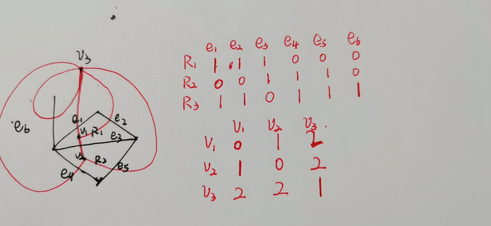

funcinit() { fmt.Println("输入面数：") fmt.Scanln(&plane_num) fmt.Println("输入边数：") fmt.Scanln(&edge_num) fmt.Println("输入连通分支数") fmt.Scanln(&p) fmt.Println("输入面矩阵：") for i := 0; i < plane_num; i++ { for j := 0; j < edge_num; j++ { fmt.Scan(&original_matrix[i][j]) } } fmt.Println() }
0x02 test是否出错
打印输入的矩阵，观察是否有出错的地方
functest_original_print() { fmt.Println("原始面矩阵:") fmt.Printf("\t") for i := 0; i < edge_num; i++ { fmt.Printf("e%d\t", i) } fmt.Println() for i := 0; i < plane_num; i++ { fmt.Printf("R%d\t", i) for j := 0; j < edge_num; j++ { fmt.Printf("%d\t", original_matrix[i][j]) } fmt.Println() } fmt.Println() }
0x03 欧拉公式
对偶图顶点数=原图面数
对偶图边数=原图边数
连通分支=原图连通分支，直接套欧拉公式n-m+r=p+1
/* n-m+r=1+p n=1+p+m-r */ funcget_n_m_r() { fmt.Println("顶点数 n =", 1+p+edge_num-plane_num) //n=1+p+edge_num-plane_num fmt.Println("边数 m =", edge_num) //m=edge_num fmt.Println("面数 r =", plane_num) //r=plane_num }
funcget_dual_n_m_r() { dual_n = plane_num dual_m = edge_num dual_r = 2 + edge_num - plane_num fmt.Println("对偶图顶点数 n =", dual_n) fmt.Println("对偶图边数 m =", dual_m) fmt.Println("对偶图面数 r =", dual_r) }
0x04 Duel！

比对俩平面有多少个1能重合就行
环的话就只看列，如果只有一个1就会成环，1在哪就是哪个平面内的对偶图顶点成环，自己和自己成1
funcget_dual_adjancy() { for j := 0; j < dual_m; j++ { num := 0 vertex := [2]int{0} for i := 0; i < dual_n; i++ { if original_matrix[i][j] == 1 { vertex[num] = i num++ } } if num == 2 { dual_adjancency[vertex[0]][vertex[1]]++ dual_adjancency[vertex[1]][vertex[0]]++ } elseif num == 1 { dual_adjancency[vertex[0]][vertex[0]]++ } }
fmt.Println("对偶图的邻接矩阵为：") fmt.Printf("\t") for i := 0; i < dual_n; i++ { fmt.Printf("v%d\t", i) } fmt.Println()
for i := 0; i < dual_n; i++ { fmt.Printf("v%d\t", i) for j := 0; j < dual_n; j++ { fmt.Printf("%d\t", dual_adjancency[i][j]) } fmt.Println() } }
Complete Code
然后加上一点err判断非负和其他数据类型
go这方面是真的方便…
package main
import"fmt"
var plane_num int var edge_num int var p int var dual_n int var dual_m int var dual_r int var original_matrix [20][20]int var dual_adjancency [20][20]int
var plane_num int var edge_num int var p int var dual_n int var dual_m int var dual_r int var original_matrix [20][20]int var dual_adjancency [20][20]int